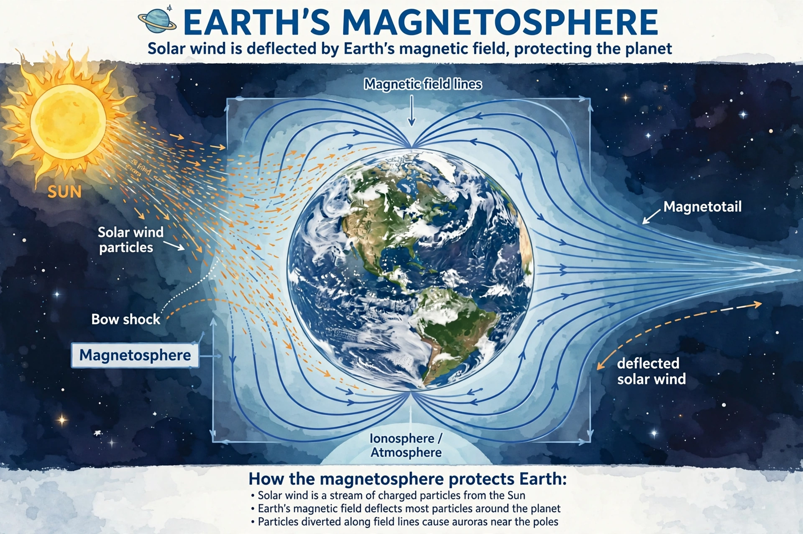

A magnetosphere is the region around an astronomical object in which charged particles are affected by that object's magnetic field. Earth's magnetosphere is formed by the interaction of the solar wind with Earth's magnetic field, deflecting most solar particles and protecting the atmosphere and surface from harmful radiation, while channelling some particles toward the poles to produce auroras.

Key regions include the bow shock, magnetosheath, magnetopause, the plasmasphere, the Van Allen radiation belts of trapped energetic particles, the plasma sheet, and the magnetotail lobes. On the day side the magnetopause lies about 10 Earth radii out; the tail extends hundreds of Earth radii.
Jupiter has the largest magnetosphere in the solar system, driven by its strong field and rapid rotation, with Io as a major plasma source. Mercury, Saturn, Uranus and Neptune also have intrinsic magnetospheres; Venus and Mars lack global intrinsic fields and have induced magnetospheres.
Geomagnetic storms, driven by coronal mass ejections, can disrupt satellites, power grids and communications.